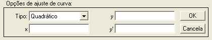
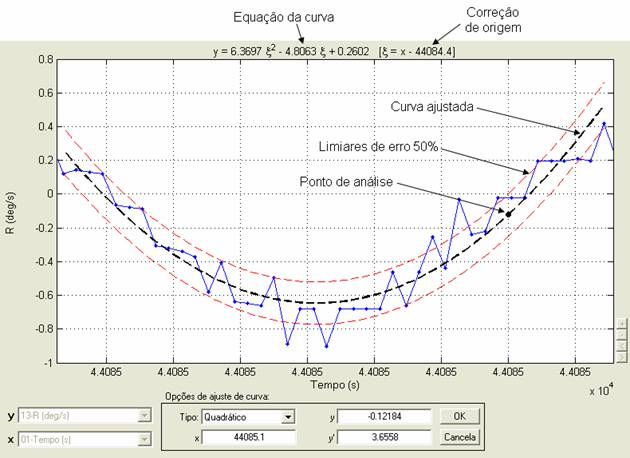
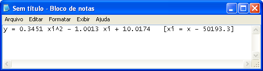
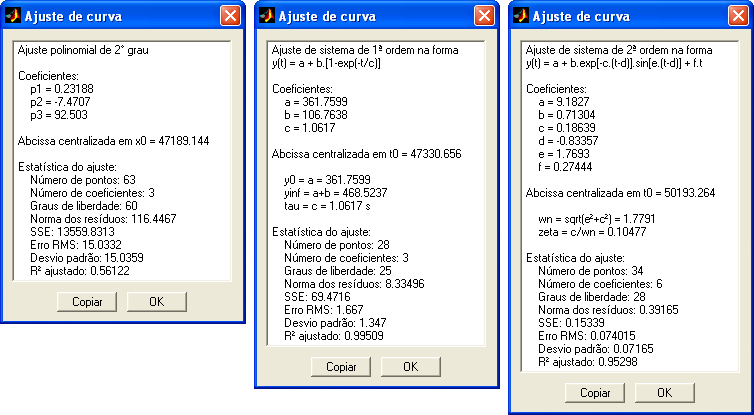
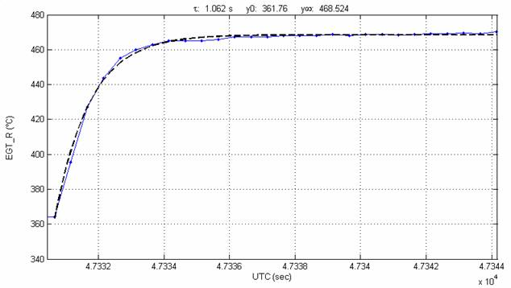
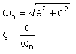
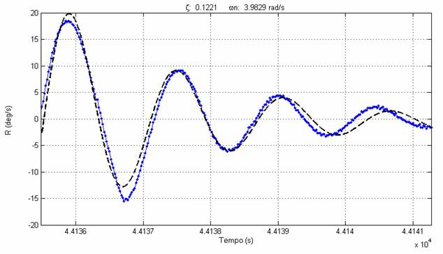
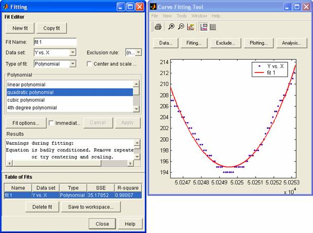

|
Menu
Funções |
|
Ajuste
de Curva
Essa função
permite ajustar uma curva polinomial ou uma
resposta de primeira ou segunda ordem a um intervalo de dados.
- Selecione os
parâmetros x e y que deseja ajustar.
- Defina o intervalo
de dados que deseja ajustar, limitando-o à parte visível do gráfico.
- Clique no menu “Funções ► Ajuste de curva”
ou no botão na
Barra de Ferramentas.
Após acionar a
função, não será possível alterar os
parâmetros ou o intervalo desejado até que a função seja terminada ou
cancelada.
O R_DAT irá,
inicialmente, analisar o intervalo definido.
Caso haja pontos inválidos no parâmetro x, a operação não poderá ser
realizada.
Caso haja pontos inválidos no parâmetro y, o R_DAT informará o usuário
que
esses pontos serão interpolados linearmente para possibilitar o ajuste:
A Caixa de
Diálogo solicitará que o usuário indique o tipo
de curva para ajuste:

● No campo
“Tipo”, indique tipo de curva para ajuste.
A curva ajustada será apresentada no gráfico conforme a seleção. As
opções são:
|
Opção |
Descrição |
|
Média |
Ajuste de ordem
zero, que fornece a média dos pontos do intervalo. |
|
Linear |
Ajuste
polinomial de 1° grau, que fornece uma reta. |
|
Quadrático |
Ajuste
polinomial de 2° grau, que fornece uma parábola. |
|
Cúbico |
Ajuste
polinomial de 3° grau. |
|
4° grau |
Ajuste
polinomial de 4° grau. |
|
5° grau |
Ajuste
polinomial de 5° grau. |
|
6° grau |
Ajuste
polinomial de 6° grau. |
|
1ª ordem |
Ajuste de
resposta de sistema de primeira ordem a uma entrada do tipo degrau, que
fornece uma constante de tempo e um valor de convergência. |
|
2ª ordem |
Ajuste de
resposta de sistema de segunda ordem a uma entrada do tipo pulso ou
degrau, que fornece uma frequência natural e um amortecimento. |
● No campo “x”,
indique um valor numérico da abscissa
para análise. No campo “y” será apresentado o valor correspondente da
curva
ajustada e no campo “y’ ”
será apresentado o valor
correspondente da derivada no ponto. Esses campos são obtidos
automaticamente
ao se clicar com o botão esquerdo do mouse sobre o gráfico.
Os seguintes
elementos são apresentados no gráfico, de
acordo com a seleção do tipo de curva e com as opções de ajuste de
curva no menu “Opções”:
Curva Ajustada
Resultado do
ajuste de curva desejado.
Limiares de Erro
Limiares de
erro positivo e negativo que englobam 50% dos
pontos ajustados por polinômio ou um desvio padrão dos resíduos dos
pontos ajustados por resposta dinâmica.
Esse elemento
pode ser ocultado selecionando-se a opção “Não
exibir limiares de erro” no menu
“Opções”.
Ponto de Análise
Ponto obtido
pela inserção de um valor de abscissa no campo
“x” da Caixa de Diálogo ou clicando sobre o gráfico. Os valores do
ajuste e da
derivada no ponto são apresentados nos campos “y” e “y’ ”
na Caixa de Diálogo.
Equação da Curva
Apresenta a
equação da curva ajustada (no caso polinomial),
os valores de τ, y0
e y∞ (no caso de
ajuste de 1ª ordem) ou os valores de ζ e ωn
(no caso de ajuste de 2ª ordem).
Caso haja
correção de origem, a variável independente x
passa a ser ξ = x – x0, onde x0
é o valor inicial de
x no intervalo selecionado.
Correção de
Origem
Para evitar
erros numéricos quando a abscissa apresenta
valores muito grandes (como hora do dia em segundos), a abscissa sofre
um offset de forma que o intervalo
de
interesse inicie em zero.
Essa correção
pode ser desabilitada selecionando-se a opção
“Não aplicar correção de origem” no menu
“Opções”.

|
Nota: As mensagens
de erro e avisos gerados pelo MATLAB durante a operação de ajuste de
curva serão apresentados ao usuário. |
Menu
da Equação
Ao clicar com o
botão direito do mouse sobre a equação,
surgirá um menu com as opções “Copiar” e “Detalhes”.

Copiar Equação
Ao clicar nessa
opção a equação será copiada como texto para
a Área de Transferência do Windows, de onde pode ser colada em qualquer
aplicativo editor de texto.

Detalhes do
Ajuste
Ao clicar nessa
opção será apresentada uma janela com os
detalhes do ajuste de curva.
Nos ajustes
polinomiais será apresentado:
- Grau;
- Coeficientes;
- Offset
da abscissa; e
- Estatísticas do
ajuste.
Nos ajustes de
primeira ordem será apresentado:
- Forma da equação
ajustada;
- Coeficientes;
- Offset
da abscissa;
- Valor inicial da
ordenada;
- Valor de
convergência da ordenada;
- Constante de
tempo; e
- Estatísticas do
ajuste.
Nos ajustes de
segunda ordem será apresentado:
- Forma da equação
ajustada;
- Coeficientes;
- Offset
da abscissa;
- Frequência natural
e amortecimento; e
- Estatísticas do
ajuste.
As estatísticas
do ajuste são:
|
Dado |
Observação |
|
Número de pontos |
Número de
pontos do intervalo ajustado (tamanho da amostra). |
|
Número de
coeficientes |
Número de
coeficientes da equação da curva ajustada. |
|
Graus de
liberdade |
Diferença entre
o número de pontos da amostra e o número de coeficientes da equação
ajustada. |
|
Norma dos
resíduos |
Representa uma
medida da aderência do ajuste, onde valores menores indicam ajustes
melhores. |
|
SSE “Sum
of squares due to error” |
Mede o desvio
da resposta com relação aos valores ajustados. Um valor próximo de zero
indica um melhor ajuste. |
|
Erro
RMS “Root
mean squared error” |
Fornece a média
quadrática dos erros. Um valor próximo de zero indica um melhor ajuste. |
|
Desvio
padrão |
Fornece o desvio padrão dos erros. Um valor próximo de zero indica um melhor ajuste. |
|
R²
ajustado |
Coeficiente de
múltipla determinação ajustado pelos graus de liberdade. Representa uma
medida normalizada da qualidade do ajuste, variando de |
Para mais
informações sobre as estatísticas do ajuste, clique
aqui.
Exemplos:

O botão
“Copiar” copia os detalhes do ajuste para a Área de
Transferência do Windows e o botão “OK” fecha a janela.
Para sair da
função, clique no botão “Cancela” da Caixa de
Diálogo.
Para substituir
os dados originais pela curva ajustada,
clique no botão “OK”. O R_DAT solicitará que o usuário confirme a
substituição:
Ao pressionar
“Sim”, os dados originais no intervalo
ajustado serão substituídos.
Lógica de
Operação
Para os ajustes
polinomiais é usada a função polyfit
do MATLAB.
Para os ajustes
de 1ª e 2ª ordem é usado um algoritmo de
minimização pelo método dos mínimos quadrados que faz uso da função lsqcurvefit do MATLAB.
A equação de
resposta de 1ª ordem ajustada é da forma:
y(t) =
a + b.[1 - exp( -t / c )]
onde busca-se obter
os coeficientes “a”,
“b” e “c” que minimizem o erro da curva ajustada com relação aos dados
originais.
A equação
incorpora os seguintes termos:
- Dois termos
independentes; e
- Um termo
exponencial negativo.
Os coeficientes
representam as seguintes características
físicas da resposta:
a
Valor inicial de equilíbrio (assumido como
sendo o 1° valor de y);
b Variação
entre o valor inicial e o valor
de convergência; e
c Tempo
em segundos para atingir 63,2 % da
resposta final (constante de tempo).
Esse ajuste não
incorpora um offset de tempo, pois
considera o início da resposta como sendo o
primeiro ponto.
Um ajuste
típico de sistema de primeira ordem é apresentado
abaixo (temperatura do motor após um degrau de manete):

A equação de
resposta de 2ª ordem ajustada é da forma:
y(t)
= a + b.exp[
-c.(t-d) ] . sen[ e.(t-d) ] + f.t
onde busca-se obter
os coeficientes “a”,
“b”, “c”, “d”, “e” e “f” que minimizem o erro da curva ajustada com
relação aos
dados originais.
A equação
incorpora os seguintes termos:
- Um termo
independente;
- Um termo
exponencial negativo multiplicado por uma senóide;
e
- Um termo linear.
Os coeficientes
representam as seguintes características
físicas da resposta:
a
Valor inicial de equilíbrio;
b Amplitude
inicial da oscilação;
c Decaimento
exponencial;
d Offset
de tempo;
e
Frequência de oscilação; e
f
Drift
linear.
Uma vez obtidos
os coeficientes, tem-se que a frequência
natural (em rad/s) e o amortecimento (adimensional) são dados por:

Um ajuste
típico de sistema de segunda ordem é apresentado
abaixo (razão de guinada em “Dutch-Roll”):

MATLAB
Curve Fitting Tool
Essa ferramenta
original do MATLAB permite realizar e analisar
diversos tipos de ajustes de curvas.
- Selecione os
parâmetros x e y que deseja ajustar.
- Defina o intervalo
de dados que deseja ajustar, limitando-o à parte visível do gráfico.
- Clique em “Funções
► MATLAB Curve Fitting Tool”.

Entre as opções
de ajustes estão:
- Polinomial
- Exponencial
- Spline
- Soma de senos
- Gaussiana
- Fourrier
- Potência
- Raíz
- Weibull
Caso nenhuma
variante dos ajustes pré-definidos seja
adequada, é possível ainda definir uma equação personalizada para
ajuste.
Para mais
informações sobre a ferramenta CFTool, clique aqui.
|
|
Diferenciação
numérica |
Função externa |
 |